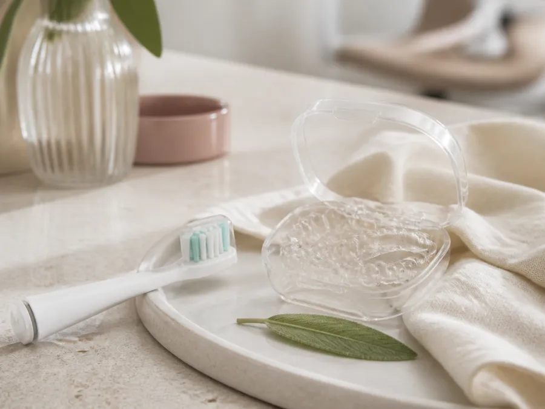
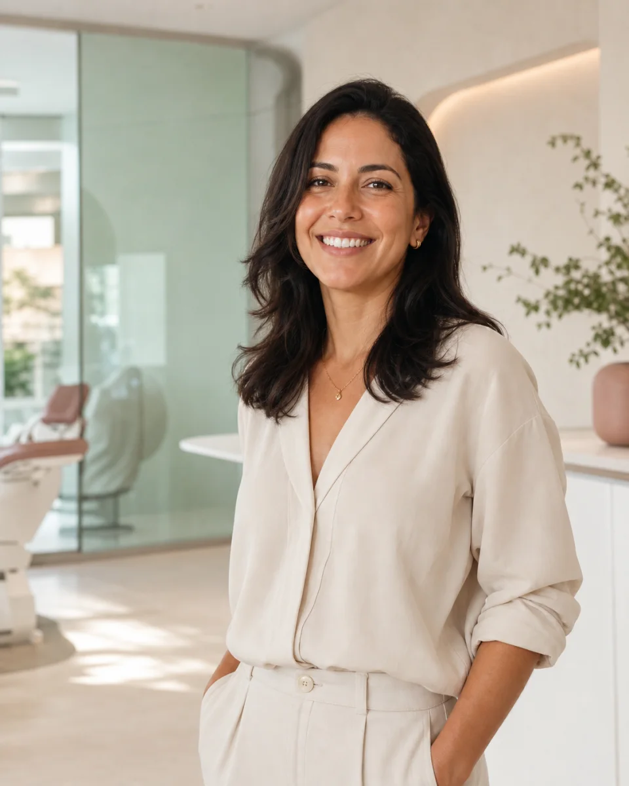
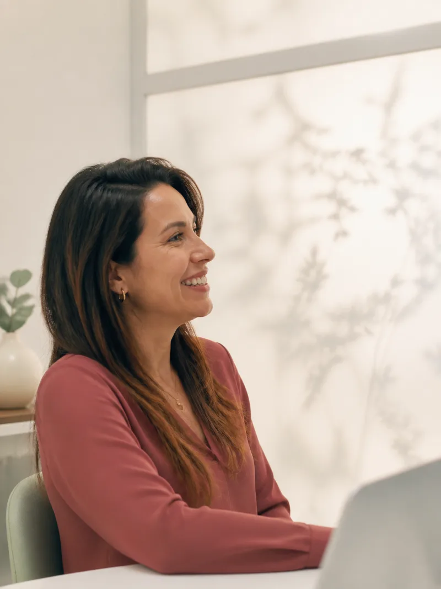
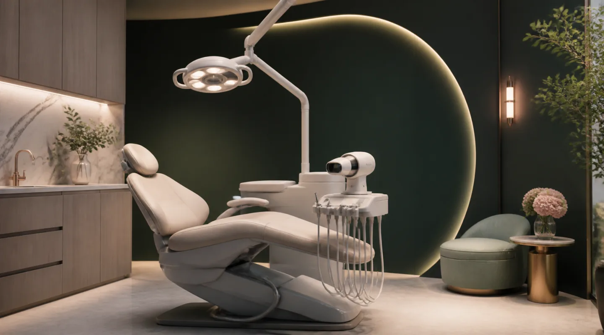
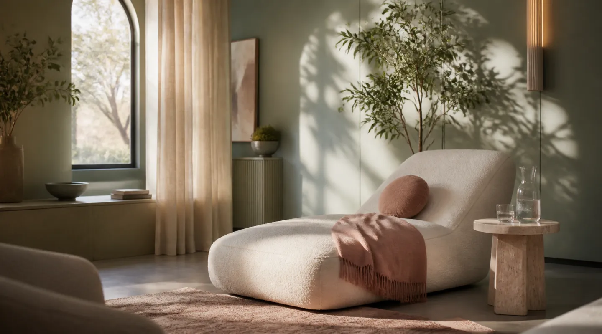
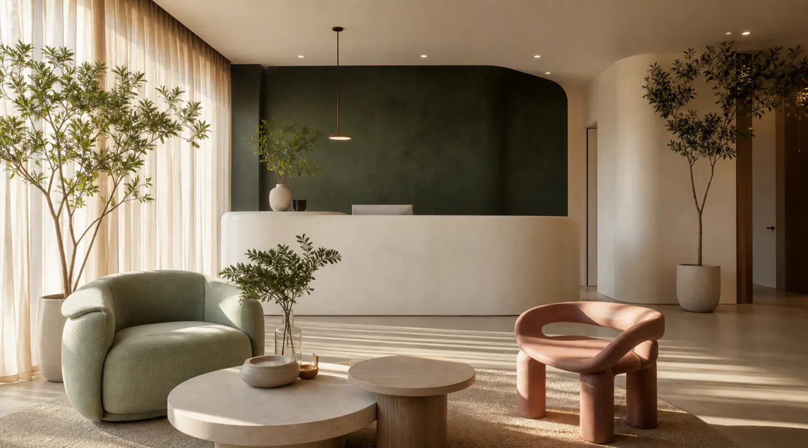
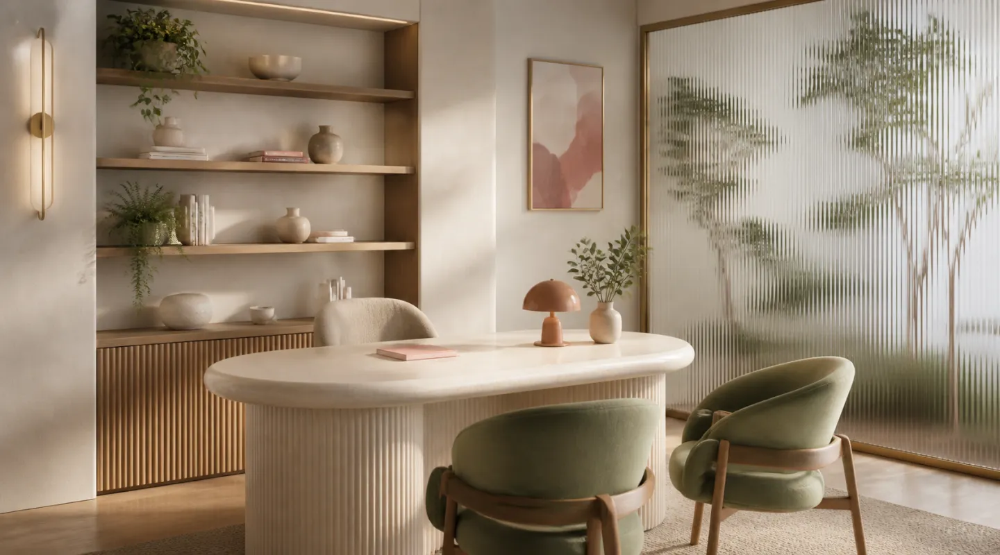

Prevenção & equilíbrio
Odontologia preventiva
Acompanhamento de saúde bucal, orientações de higiene e cuidados periódicos definidos de forma individual.
- Avaliação cuidadosa
- Rotina orientada
Odontologia contemporânea · Cuidado individual
Cuidados odontológicos personalizados que unem escuta, planejamento digital e uma experiência pensada para você.
Projeto conceitual para o portfólio Atlas Systems

ConfiançaSorrisos com intenção
CuidadoNossa essência

01 / EscutaAcreditamos em uma odontologia que começa na escuta — e respeita a identidade de cada sorriso.
Na Lúmina, cada jornada seria construída a partir de uma conversa cuidadosa. Prevenção, planejamento digital e acompanhamento próximo se encontram para criar uma experiência clara, confortável e verdadeiramente pessoal.
Possibilidades de cuidado
Abordagens odontológicas conceituais que priorizam saúde, naturalidade e decisões feitas com critério profissional.

Prevenção & equilíbrio
Acompanhamento de saúde bucal, orientações de higiene e cuidados periódicos definidos de forma individual.
Movimento & harmonia
Planejamento ortodôntico digital para estudar movimentos dentários e possibilidades compatíveis com cada caso.

Função & confiança
Possibilidades para recuperar função e conforto por meio de um plano construído a partir de avaliação clínica.

Naturalidade & expressão
Planejamento de cor, forma e proporção com foco em um resultado coerente com os traços e preferências da pessoa.
Um ponto de partida
Prevenção
Uma avaliação poderia observar hábitos, higiene, gengivas e dentes para orientar uma rotina individual de cuidado.
Exame clínico · Imagens digitais · Orientação preventiva
Tecnologia aplicada ao cuidado
A tecnologia ganha sentido quando ajuda a observar melhor, planejar com clareza e acompanhar uma jornada de forma consistente.
Interface meramente ilustrativa — sem dados odontológicos reais.
Sua jornada
Uma sequência simples para transformar escuta em um plano claro, respeitando o seu ritmo.
O primeiro contato
Um momento para entender expectativas, rotina e o que faz sentido para você — sem pressa e sem soluções prontas.
Ambientes que acolhem
Uma arquitetura conceitual desenhada para desacelerar, acolher e tornar cada etapa mais confortável.

Uma chegada leve, sem a rigidez de um ambiente clínico tradicional.

Privacidade e calma para uma conversa verdadeiramente atenta.

Tecnologia presente com precisão, ergonomia e acolhimento.
Um respiro pensado para completar a experiência com serenidade.
O jeito Lúmina
Tempo para escutar e compreender o que importa em cada jornada.
Recursos escolhidos pelo que podem acrescentar a um plano responsável.
Uma atmosfera tranquila que combina conforto, privacidade e presença.
Proximidade para ajustar caminhos e manter cada etapa compreensível.
Dúvidas frequentes
Reunimos respostas gerais sobre como funcionaria a experiência da Clínica Lúmina.
Seria uma conversa sobre saúde, rotina, desconfortos e expectativas, seguida de avaliação odontológica. Exames complementares poderiam ser solicitados quando necessários.
A definição dependeria de diagnóstico individual, exames, prioridades de saúde bucal, preferências e orientações de uma pessoa cirurgiã-dentista.
Não existe um número universal. Frequência e duração variam conforme o diagnóstico, a complexidade do caso e o plano definido após avaliação.
Sim, diferentes especialidades poderiam compor um plano integrado, desde que as etapas fossem coordenadas por profissionais habilitados.
Neste projeto conceitual, os botões de agendamento abrem apenas uma demonstração. Em uma aplicação real, direcionariam ao canal oficial da clínica.
O primeiro passo pode ser simples
Agende uma avaliação e conheça uma jornada odontológica pensada para suas necessidades.
Projeto conceitual — nenhuma consulta real será agendada.